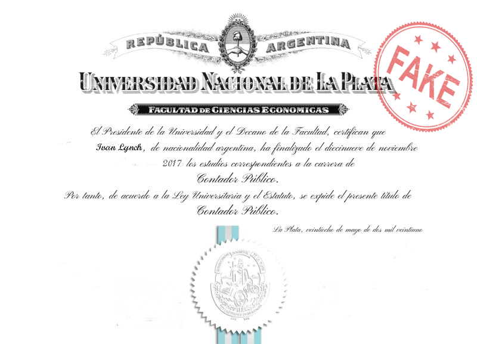

SOBRE MI
Gestor de contabilidad a tiempo completo con 10 años de experiencia en administracion de sueldos
contabilidad empresarial, analisis de riesgos, presupuestos y recursos humanos.
Mi experiencia incluye trabajo amplio en cuentras por pagar, cuentas por cobrar, cobranza, informes,
financieros y auditorias.
EDUCACION
Colegio Cardenal Newman.
Mencion honorifica, 2012
Universidad Nacional de la Plata
Licenciatura en contabilidad, 2017
